Analista de Desenvolvimento de Software | Analista de Projetos | Desenvolvedor Full-Stack
Java | Spring Boot | React.js | Microserviços | Arquitetura de Sistemas | Análise de Software | Code Review e Clean Code
Analista de Desenvolvimento de Sistemas com foco em Desenvolvimento Full-Stack e Análise de Projeto, combinando análise de negócios profunda com habilidades técnicas para garantir o desenvolvimento de produtos robustos e escaláveis. Experiência comprovada no levantamento de requisitos e regras de negócios com stakeholders, desenvolvimento e sustentação de sistemas críticos no setor bancário e financeiro, além da gestão integral de projetos desde o levantamento de requisitos até controle de qualidade e deploy em produção.
Experiência em Arquitetura de Microserviços, Design Patterns e Clean Code Principles. Experiência sólida em revisão de código (Code Review), uso de pipelines CI/CD, testes automatizados e garantia de qualidade. Foco em escalabilidade, segurança de dados, manutenibilidade e excelência técnica.
Java (versões 8, 11, 17, 21) | Spring Boot 3.x | Spring Framework (Data, Security, Cloud) | Spring Cloud | Jakarta EE | APIs RESTful | Microserviços | Arquitetura de Soluções | Design Patterns | Hibernate ORM | JPA | Maven | WebSphere MQ | Otimização de Performance
React.js (Hooks, Redux, Context API) | Next.js | Angular | TypeScript | JavaScript (ES6+) | HTML5 | CSS3 | Design Responsivo | UX/UI Design | Vite | Tailwind CSS
SQL | Oracle | DB2 | Otimização de Consultas | Indexação de Banco de Dados | PowerDesigner | Modelagem de Dados
Jenkins | Git/GitHub | Docker | Containerização | Pipelines CI/CD | Integração Contínua | Deploy Contínuo | Automação | Oracle Cloud | Infrastructure as Code | Swagger/OpenAPI
Metodologias Ágeis (Scrum, Kanban) | ATDD (Acceptance Test Driven Development) | Testes Automatizados (Cypress, JUnit) | Code Review | Clean Code | SOLID Principles | Análise de Ponto de Função (IFPUG) | Rational DOORS | Swagger | Postman | Levantamento de Requisitos | Documentação Técnica | UML
Sistemas Bancários | Transações Financeiras | Segurança de Dados | Conformidade (PCI-DSS) | Análise de Requisitos | Gestão de Riscos | Documentação de Arquitetura
Empresa: G4F - Banco do Nordeste
Cargo: Analista Sênior de Desenvolvimento de Sistemas | Arquiteto de Soluções
Período: 06/2023 - Atualmente
Empresa: Engesoftware - Banco do Nordeste
Cargo: Analista de Desenvolvimento de Sistemas
Período: 05/2022 - 05/2023
Quadra Pontual - Sistema de Reserva de Quadras Esportivas
Descrição:
Aplicação RESTful desenvolvida para permitir reserva de quadras esportivas, oferecendo serviços intuitivos e escaláveis para gerenciamento de reservas.
Arquitetura & Tecnologias:
Java 21 com Spring Boot 3.5 | Oracle Cloud | Arquitetura de Microserviços | RestTemplate | Swagger/OpenAPI | JWT Authentication
Funcionalidades:
Cadastro de usuários | Cadastro de Estabelecimentos | Cadastro de Quadras | Reservas de Quadras | Listagem de Quadras, Estabelecimentos e Reservas | Ajuste de Reservas | Edição de Quadras, Estabelecimentos e Usuários
Repositório GitHub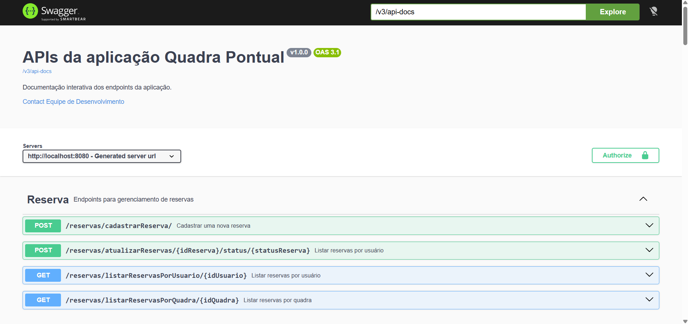
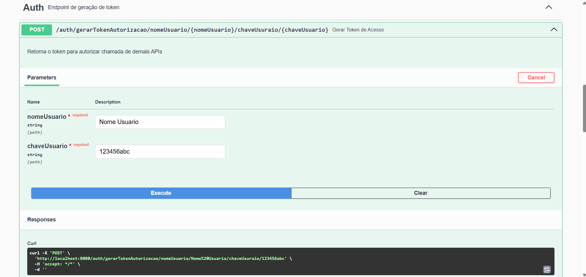
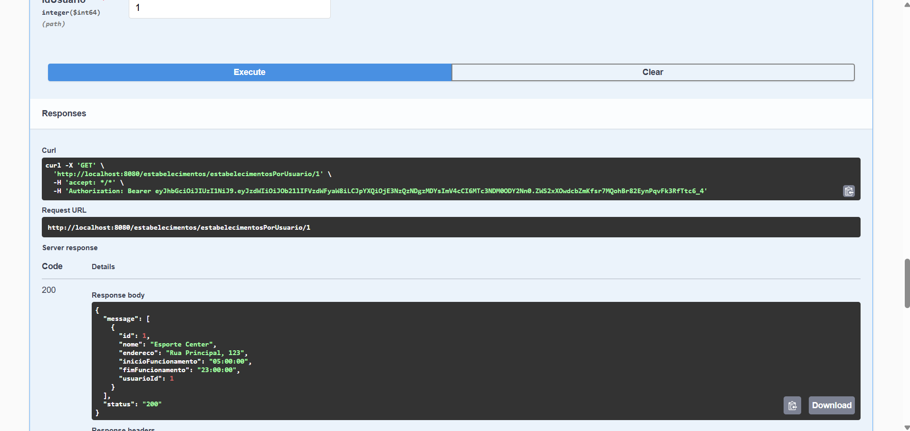
Segundos API - Sistema de Monitoramento de Tempo de Estudos
Descrição:
Aplicação RESTful desenvolvida para gerenciar e cronometrar o tempo de estudos, permitindo aos usuários monitorar seu desempenho acadêmico e visualizar histórico de horas dedicadas com análises detalhadas.
Arquitetura & Tecnologias:
Java 21 com Spring Boot 3.5 | Spring Data JPA | PostgreSQL | RESTful API | Swagger Documentation
Funcionalidades:
Cronometragem de sessões de estudo | Histórico de atividades | Relatórios de produtividade | Métricas de performance
Repositório GitHub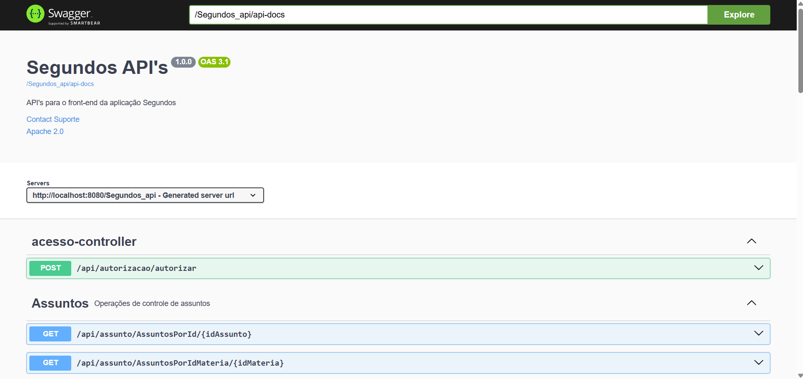
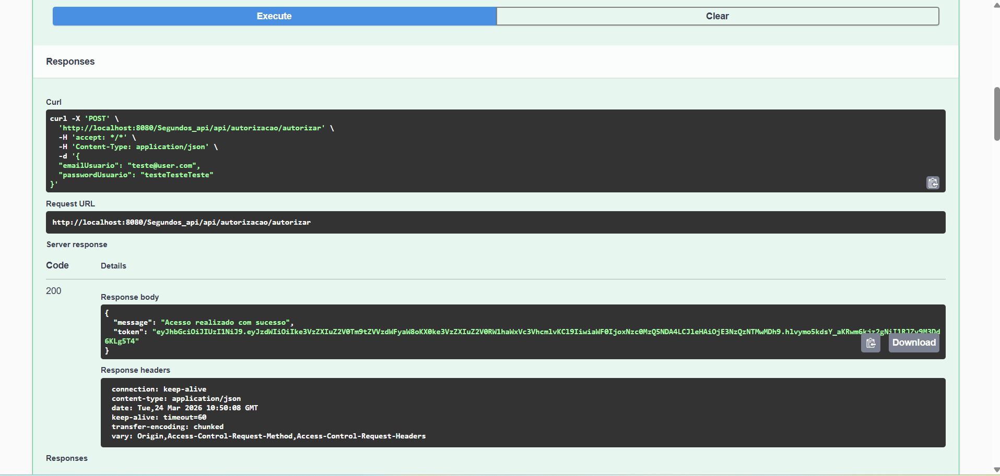
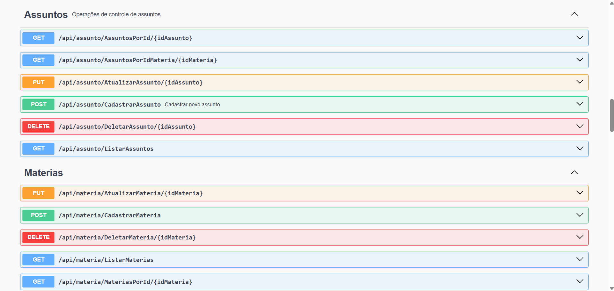
Segundos App - Aplicativo Web de Gerenciamento de Estudos
Descrição:
Aplicativo web responsivo e moderno para gerenciar e cronometrar o tempo de estudos, permitindo aos usuários monitorar seu desempenho acadêmico em tempo real com interface intuitiva.
Arquitetura & Tecnologias:
React 19 | TypeScript 4.9 | Hooks & Context API | Responsive Design | CSS3 | Axios | Bootstramp
Funcionalidades:
Interface responsiva e moderna | Cronometragem em tempo real | Dashboard com métricas | Gráficos de progresso | Sincronização com backend
Visitar Página Repositório GitHub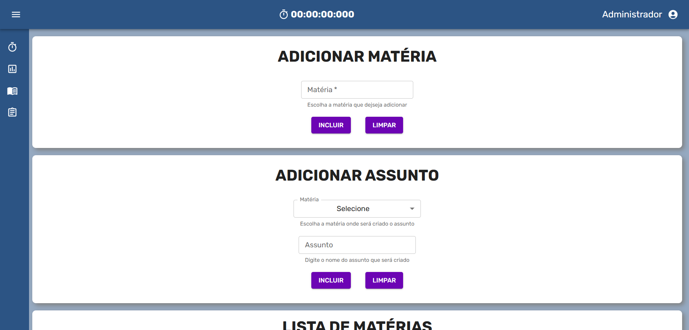
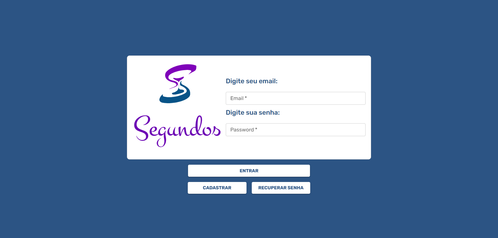
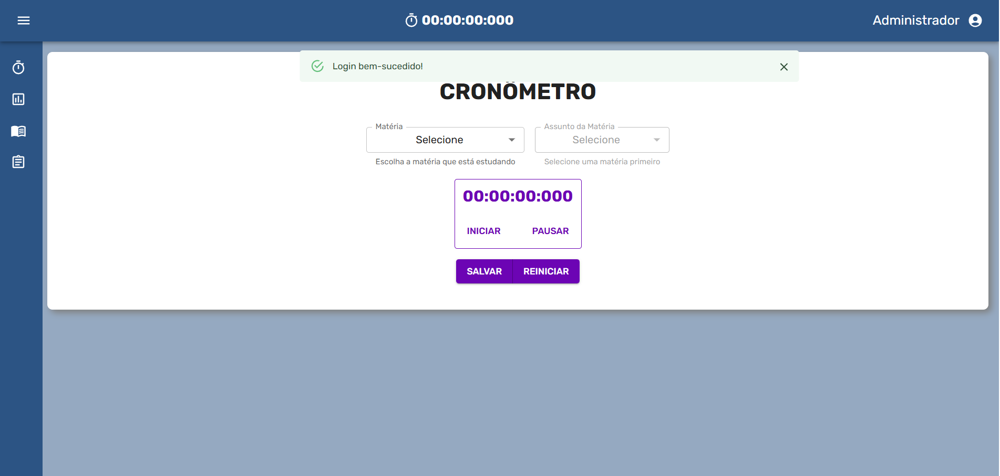
Awards - Website Dinâmico para Jogo Online
Descrição:
Website dinâmico e visualmente impressionante desenvolvido para apresentar um jogo online, com animações fluidas e design moderno utilizando as tecnologias mais atuais do frontend.
Arquitetura & Tecnologias:
React 19 | Vite | Tailwind CSS | GSAP para Animações | JavaScript Moderno | Build Otimizado
Funcionalidades:
Animações fluidas | Design responsivo | Página interativa | Performance otimizada
Visitar Página Repositório GitHub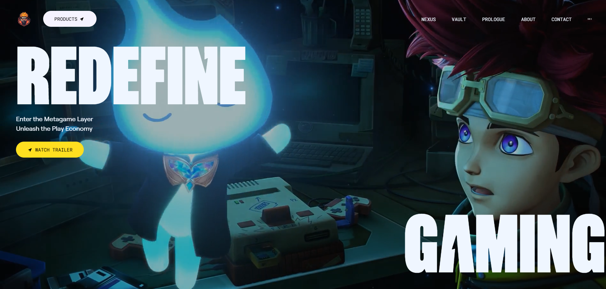
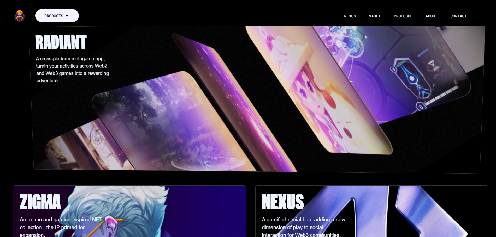
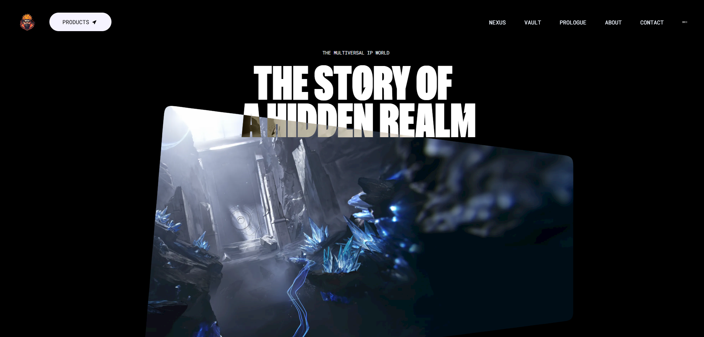
AirBNB Simulator - Website para Testar Práticas de Front-End
Descrição:
Web site simples, mas com teorias aplicadas de HTML5, CSS3, Javascript, Eslint e TailwindCSS.
Arquitetura & Tecnologias:
React 19 | Tailwind CSS | JavaScript Moderno | Eslint | Next JS
Funcionalidades:
Acomodações e Informações da Acomodação
Visitar Página Repositório GitHub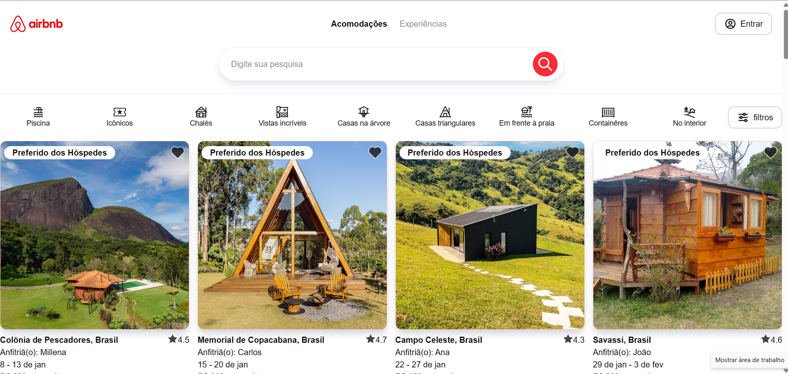
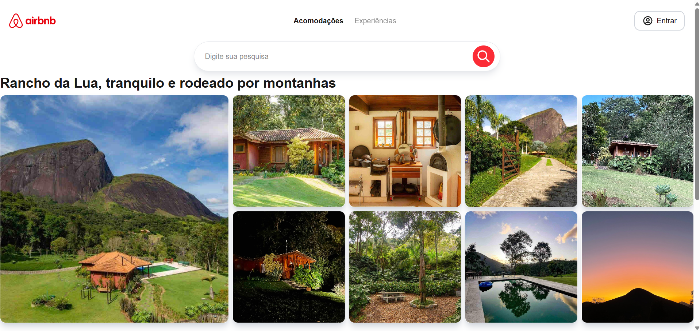
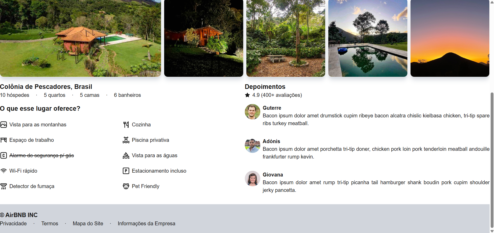